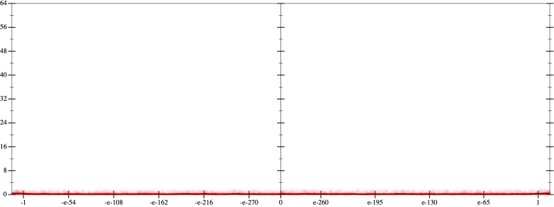
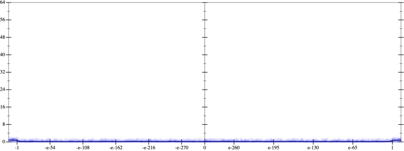
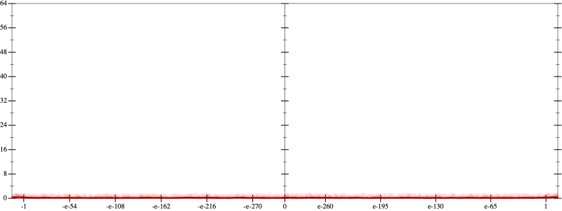
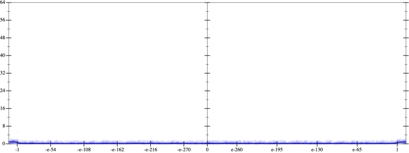
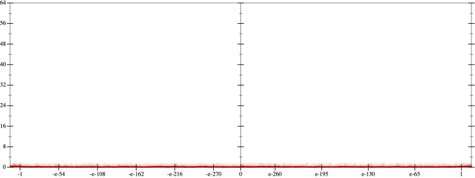
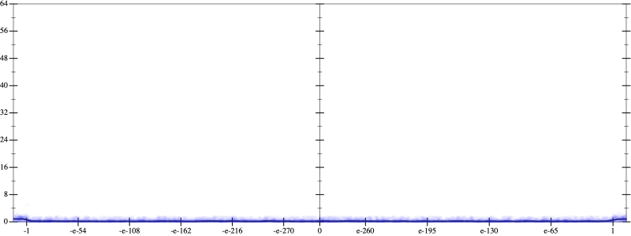

Error
 
Bits error versus x
Bits error versus x
Results
Initial program 0.2
rmApplied add-cube-cbrt0.2
Time bar (total: 42.7s)Debug log
herbie shell --seed 1000236972
(FPCore (x)
:name "3"
:pre (and (>= x -1e+14) (<= x 1e+14))
(+ (* -1.5 x) (* 2.5 (* (* x x) x))))